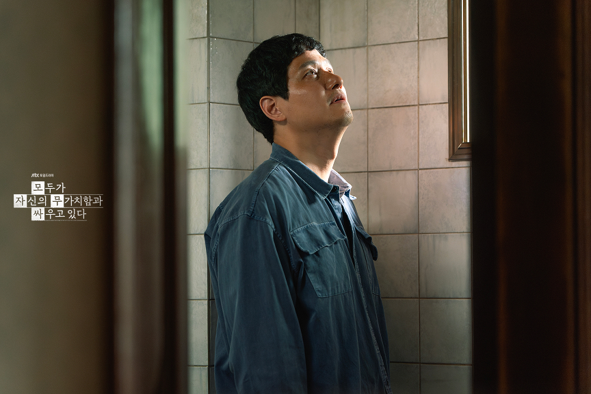

사람은 누군가가자신을 있는 그대로 담아줄 때비로소 자신의 가장 깊은 감정을마주할 수 있습니다 JTBC 드라마〈모두가 자신의 무가치함과싸우고 있다〉는바로 그 순간을 보여줍니다 그리고 그 순간은성경이 오래전부터말해온 이야기와깊이 맞닿아 있습니다 - 감정워치 "알 수 없음" 드라마에는사람의 감정을 감지하는감정워치가 등장합니다 기쁨, 슬픔, 분노, 두려움 그런데 단 두 사람에게만"알 수 없음"이라는알림이 뜹니다 변은아(고윤정) 그리고 황동만(구교환) "알 수 없음"은감정이 없는 것이 아닙니다
분명히 무언가가 있는데그것이 무엇인지알 수 없는 상태입니다 그리고 그 "알 수 없음" 안에는말하지 못한 "도와줘"가깊이 잠겨 있었습니다 여기서 잠깐한 가지 질문을 드리고 싶습니다 우리는 과연자기 자신을 잘 알고 있을까요? 종교개혁자 칼뱅은기독교강요 첫 문장에서이렇게 말했습니다 "하나님을 아는 지식과자기 자신을 아는 지식은서로 연결되어 있다" 하나님을 모르면자기 자신도 제대로알 수 없다는 것입니다 변은아와 황동만의"알 수 없음"은단순한 심리적 문제가아닐 수 있습니다 자기 자신의 가장 깊은 곳을알 수 없게 된인간의 모습 어쩌면 우리 모두의감정워치에"알 수 없음"이떠 있는 것은 아닐까요 변은아의 "알 수 없음" — 얼어붙은 부르짖음 변은아는아홉 살에 버려졌습니다 아빠는 엄마와의 갈등으로 화가 나서 집을 나갔습니다이후 엄마도 집을 나갔습니다어린 아이를 집에 둔 채로요 그 순간어린 변은아의 마음 안에는분명히 무언가가 있었습니다 "도와줘" 그런데 그 말이나오지 않았습니다 버려진 것이 들키면 안 되기 때문입니다그것이 알려지면더 무가치한 존재가 되기 때문입니다 그래서 혼자 버텼습니다아무렇지 않게 학교를 갔습니다그렇게 아무도 어리아이가 혼자 버려져 있는줄 몰랐습니다 너무 크고감당할 수 없는 감정 앞에서 싸울 수도도망갈 수도 없는 아이는 얼어붙습니다 "도와줘"라는 말조차나오지 않습니다 그것은 감정이 없어진 것이 아닙니다얼어붙은 것입니다 그리고 어른이 된 변은아에게비슷한 감정이 올라올 때마다 '연인과의 헤어짐회사에서의 배제됨' 감정워치는 알립니다"알 수 없음" 이라고...
그리고 그럴때마다 코피가 났습니다온몸이 아팠습니다. 변은아 자신도 몰랐습니다그것이 무엇때문인지...... 성경에는 이런 말씀이 있습니다 "내가 깊은 곳에서주께 부르짖었나이다"(시편 130편 1절) "깊은 곳" 이것은 단순히힘든 상황을 말하는 것이 아닙니다
존재의 가장 밑바닥아무도 모르는 그 깊은 곳에서올라오는 부르짖음입니다 변은아의 "도와줘"는바로 그 깊은 곳에서올라오는 부르짖음이 아닐까요... 그런데 그 부르짖음이얼어붙었습니다 향할 곳을 잃었습니다 그렇게 "알 수 없음"이 되었습니다 황동만의 "알 수 없음"— 자기 자신을 마주하는 순간 황동만은형 황진만의 자살시도를목격했습니다

형을 살리려고온몸으로 몸부림쳤습니다 그 순간황동만의 감정워치에도"알 수 없음"이 떴습니다 황동만도 몰랐습니다그것이 무엇인지 나중에 감정워치 연구원이그날의 녹음을 들려주었습니다
황동만은 듣습니다그리고 깨닫습니다 "그때 자신의 알 수 없음은사실 도와줘였구나" 정신분석가 비온(Bion)은이것을 K라고 불렀습니다 단순히 머리로 아는 지식이 아니라 자신의 내면을있는 그대로마주하려는 움직임
감정 전체로존재 전체로아는 것... 이것이 K입니다. 황동만에게 그 순간이찾아온 것입니다 그런데 여기서중요한 질문이 있습니다 황동만이 자신의 "알 수 없음"을마주할 수 있었던 것은무엇 때문이었을까요? 아마도. 변은아의 황동만을 향한 담아주기 때문이었을것 같습니다. 모두가 황동만을불편해하고, 싫어합니다. 황동만이라는 사람은
20년째 영화감독으로 데뷔하지 못한 사람경제적으로 자립하지 못하고 형에게 얹혀 사는 사람사람들과의 관계에서 분위기를 읽지 못하고끊임없이 자기하고 싶은 말만 떠드는 사람 그래서 사람들은 황동만을 외면했습니다. 조롱했습니다 그때 변은아만이황동만을 다른 시각으로 보았습니다 "황동만은 인간적이다""천 개의 문이 열려 있는 사람 같다" 모두가 등을 돌릴 때변은아는 황동만을있는 그대로 담아주었습니다 정신분석학자 비온은이것을 컨테이닝(Containing)이라고불렀습니다 엄마가 아이의감당하기 어려운 감정을판단하지 않고안전하게 받아서담아주는 것 변은아는황동만의 소란스러움을황동만의 불완전함을황동만의 무가치감을 판단하지 않고있는 그대로 담아주었습니다
그리고 이 장면에서저는 성경의 한 장면이떠올랐습니다 모두가 외면할 때먼저 다가오시는 분... 성경은 말합니다 "우리가 아직 죄인 되었을 때에그리스도께서 우리를 위하여죽으심으로하나님께서 우리에 대한자기의 사랑을 확증하셨느니라"(로마서 5장 8절) 우리가 괜찮아진 다음에하나님이 오신 것이 아닙니다 우리가 여전히 불완전하고소란스럽고무가치감에 떨고 있을 때 하나님은 먼저 찾아 오셨습니다 변은아가 황동만에게 한 것처럼 이것이 은혜입니다이것이 성경이 말하는언약의 구조입니다 하나님이 먼저우리를 담아주십니다 그 컨테이닝 안에서황동만은 비로소자신의 "알 수 없음"을마주할 수 있었습니다
누군가가 나를있는 그대로 담아줄 때 우리는 비로소 자신의 가장 깊은 감정을마주할 수 있습니다 황동만은 변은아에게코피가 나며, 알 수 없음이라는 감정워치가울리는 것은...바로... '도와달라는..' '도움이 필요하다는...'것이란 것을 알려줍니다...
황동만은 자신의 "알 수 없음"이바로 "도와줘"였다는 것을 깨달은 순간 "변은아의 알 수 없음도사실은 도와줘였구나" 라는 것을 깨닫게 됩니다. 그렇게황동만은 변은아에게 다가가안아줍니다그리고 말해줍니다 '알 수 없음'은 "도와줘"였다고 변은아가 아홉 살부터한 번도 꺼내지 못했던 말을 황동만이 처음으로대신 말해주었습니다 이 장면을 보며저는 성경 말씀 하나가떠올랐습니다 "이와 같이 성령도우리의 연약함을 도우시나니우리는 마땅히 기도할 바를알지 못하나오직 성령이 말할 수 없는탄식으로 우리를 위하여친히 간구하시느니라"(로마서 8장 26절) 우리는 마땅히기도할 바를 알지 못합니다 "도와줘"라는 말조차나오지 않을 때가 있습니다
그때 성령께서우리 안에서말할 수 없는 탄식으로대신 간구하십니다 황동만이 변은아의"도와줘"를 대신 말해준 것처럼 하나님은우리가 말하지 못하는가장 깊은 부르짖음을이미 알고 계십니다 그리고 대신 말씀하십니다 이번엔 황동만이변은아의 컨테이너가 되었습니다 변은아가 황동만을 담아주었고그 안에서 황동만은자신이 어떤 사람인지깨닫게 되었습니다 그리고 그 깨달음을 통해황동만은 변은아를 담아주었습니다 컨테이닝은 이렇게한 사람에서 다른 사람으로흘러갑니다 성경은 이것을이렇게 말합니다 "너희가 짐을 서로 지라그리하여 그리스도의 법을성취하라"(갈라디아서 6장 2절) 이 시대의 "알 수 없음"— 하나님을 잃어버린 시대 JTBC <모두가 자신의 무가치함과 싸우고 있다>드라마의 박해영 작가는이 드라마를 통해우리 시대를 향해조용히 묻고 있는 것 같습니다 우리는 지금"알 수 없음"의 감정으로자신의 진짜 감정을 감춘 채살아가고 있는 것은 아닌가 하고요 정말 힘든 사람은"도와줘"라는 말 한마디 못하고혼자 삭힙니다 반대로 SNS에는자신의 고통을 전시하고소비하는 이미지들이넘쳐납니다 진짜 고통은 숨겨지고고통의 이미지는 소비됩니다 우리는 지금"도와줘"라는 말이가장 인간적인 말임에도그 말을 가장 하기 어려운시대를 살고 있습니다 왜 이렇게 되었을까요? 칼뱅의 말을 다시 떠올립니다 "하나님을 아는 지식과자기 자신을 아는 지식은서로 연결되어 있다" 하나님께 "도와줘"라고부르짖을 수 없을 때 인간은 그 부르짖음을다른 곳으로 향합니다 SNS로성취로비교로끊임없는 소란으로 그러나 그것들은진짜 컨테이너가 될 수 없습니다 우리의 "알 수 없음"을완전히 담아줄 수 있는 분은오직 한 분입니다완전한 컨테이너— 오직 하나님 변은아가 황동만을 담아준 것은너무나 따뜻했습니다 황동만이 변은아를 담아준 것도너무나 아름다운 감동이었습니다 그러나 그것은불완전합니다 인간이 인간을 담아주는 것은언제나 불완전합니다 우리는 서로의 짐을 질 수 있지만서로의 짐을 완전히없애줄 수는 없습니다 그러나 성경은 말합니다 "수고하고 무거운 짐 진 자들아다 내게로 오라내가 너희를 쉬게 하리라"(마태복음 11장 28절) 예수님은변은아처럼 버려진 사람에게황동만처럼 소란스러운 사람에게모두가 외면할 때 먼저 찾아오십니다 그리고 담아주십니다 우리가 말하지 못하는"도와줘"를 이미 알고 계십니다 이미 들으십니다 이미 담아주고 계십니다 드라마 〈모두가 자신의 무가치함과 싸우고 있다〉는
인간이 얼마나 깊이"도와줘"를 필요로 하는 존재인지를 보여줍니다 그리고 그 "도와줘"에응답하는 것이얼마나 인간다운 일인지를보여줍니다 그런데 성경은그보다 훨씬 오래전부터말해왔습니다 하나님이 먼저우리의 "도와줘"에응답하셨다고 그 응답이예수 그리스도라고 인간다움은완벽함이 아니라자기 안의 불완전함을받아들이는 용기입니다 그리고 그 용기는 나의 "알 수 없음"을이미 알고 계신 분 앞에설 수 있을 때 비로소 생겨납니다 [빌드업메시지의 한 줄] "도와줘"라고 말하지 못하는 것은 그 말을 담아줄 분을아직 만나지 못한 것입니다 당신의 "알 수 없음" 속에 있는 그 말을 하나님은 이미듣고 계십니다 #모두가자신의무가치함과싸우고있다 #구교환 #고윤정 #박해영작가 #컨테이닝 #담아주기 #개혁주의신학 #하나님의은혜 #시편130편 #로마서8장 #신앙에세이 #빌드업메시지 #빌드업교회 #도담마인드케어심리상담센터